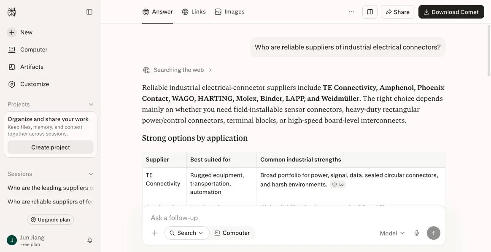

立德引擎 · Lide Engine
给出海工厂装一条
持续出询盘的产线
一条主动线：仿生外贸人 Email 矩阵，逐家背调、逐封重写，直接找到采购决策人。
一条被动线：GEO 生成式引擎优化，让
ChatGPTPerplexityClaudeGeminiGrokDeepSeek
在海外买家问采购问题时点名推荐你。
Email 解决「他还不认识你」，GEO 解决「他回头去查你」。两条腿一起跑，才是一条完整的产线。
3 个工作日交付 · 含竞对被 AI 推荐的实拍截图 · 不满意不推进
两条线共用同一套背调数据与话术资产。只跑一条，产线是瘸的。
主流 AI 回答目标品类问题时，品牌从「完全消失」进入前三推荐。
AI 推荐流量已完成首轮技术筛选，成交周期显著缩短。
相比持续付费的 SEM 竞价，GEO 是一次性构建、长期复用的数字资产。
覆盖海外买家正在使用的生成式引擎
找不到人，也等不到人
出海工厂拿询盘只有三条路：主动去找、被动等来、花钱买。三条现在都在失灵。
开发信石沉大海
群发的模板信，收件人一眼就看得出来。销售一天发两百封，回复率长期低于 1%，还越发越进垃圾箱。
买家在 AI 里做完决策
采购的第一站已从 Google 变成向 AI 提问。AI 点名的永远是欧美日老牌，名单上没有你，报价和打样都不会发生。
买到的是末端流量
平台与广告年年涨价，可决策早在上游做完了。停投即断流，钱没有沉淀成你自己的资产。
一条产线，两条线并行
不是投放，不是买流量。我们帮你把找客户的能力本身建成可复用的资产。
仿生外贸人 · Email 矩阵
我们去找他 —— 对应痛点 01
- 六类数据源做背调，先弄清这家公司在买什么、谁拍板
- 每封信按这一家重写，标题与开场 60 天内不重复
- 直达采购与技术决策人，不落在 info@ 邮箱里
GEO · 生成式引擎优化
让 AI 把他带给我们 —— 对应痛点 02
- 把决定选型的技术参数从 PDF 黑箱里释放成 AI 可抓取的结构化数据
- 在行业技术媒体与专业社区建立多源交叉验证，让 AI 敢引用你
- 与国际大牌型号做参数对标，切进买家最常问的「替代方案」查询
两条线汇入同一个询盘池
每条询盘都附上背调事实与判断依据，按 A / B / C 分级交付到你手上， 销售不用再自己筛。而且两条线建的都是你自己的资产——一份联系人与话术库，一套 AI 读得懂的技术语料， 不按点击续费。对应痛点 03。 看完整产线与交付标准 →
不是示意图，是真实跑出来的
左边是主动线的自营实测数据，右边是被动线当天的 AI 实测截图——问题原文印在图上，你可以自己复现。两条线我们都先拿自己的业务跑过。
主动线，我们自己先跑了一遍
不是拿客户练手——立德引擎在自己的化工出口业务上完整运行了这套方法。
- 2,500+ 封个性化开发信，逐封背调
- 30+ 条询盘，询盘率约 1.2%，含 6 个寄样请求
- 100 吨/月 欧洲大客户需求（推进中，尚未成交）
Who are reliable suppliers of industrial electrical connectors?
AI 不会因为你是中国企业就不推荐你——它只引用它读得到、且能交叉验证的内容。 同一天问光伏，AI 主动点名晶科、隆基、天合。差距不在产品，在语料。 看 7 个品类的完整实测记录 →